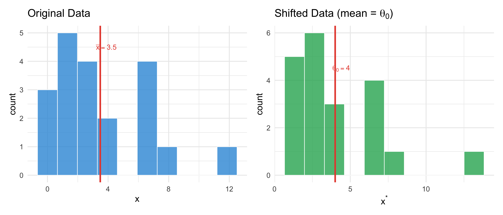

Code
set.seed(42)
n_shift <- 20
x_obs_shift <- rexp(n_shift, rate = 0.2) # right-skewed; true mean = 5
theta_0 <- 4 # null hypothesis value
x_shifted <- x_obs_shift - mean(x_obs_shift) + theta_0
p_orig <- ggplot(tibble(x = x_obs_shift), aes(x = x)) +
geom_histogram(bins = 10, fill = "#3498db", color = "white", alpha = 0.8) +
geom_vline(xintercept = mean(x_obs_shift), color = "#e74c3c", linewidth = 1.5) +
annotate("text", x = mean(x_obs_shift) + 0.4, y = 4.5,
label = sprintf("bar(x) == %.1f", round(mean(x_obs_shift), 1)),
parse = TRUE, color = "#e74c3c", size = 5) +
labs(title = "Original Data", x = "x", y = "count")
p_shift <- ggplot(tibble(x = x_shifted), aes(x = x)) +
geom_histogram(bins = 10, fill = "#27ae60", color = "white", alpha = 0.8) +
geom_vline(xintercept = theta_0, color = "#e74c3c", linewidth = 1.5) +
annotate("text", x = theta_0 + 0.4, y = 4.5,
label = sprintf("theta[0] == %.0f", theta_0),
parse = TRUE, color = "#e74c3c", size = 5) +
labs(title = expression("Shifted Data (mean = " * theta[0] * ")"),
x = expression(x^"*"), y = "count")
p_orig + p_shift